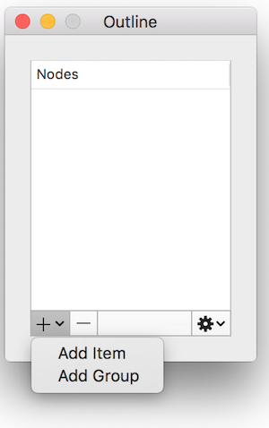
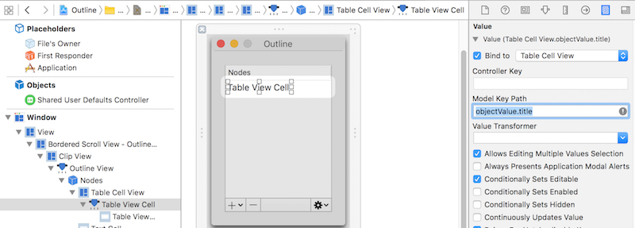
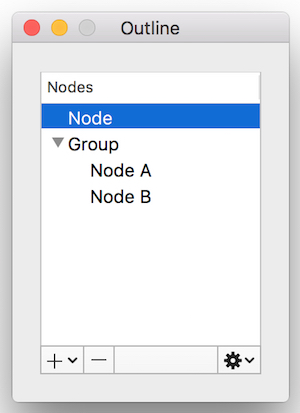
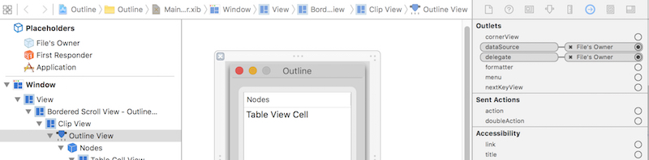
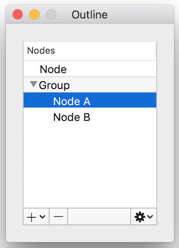
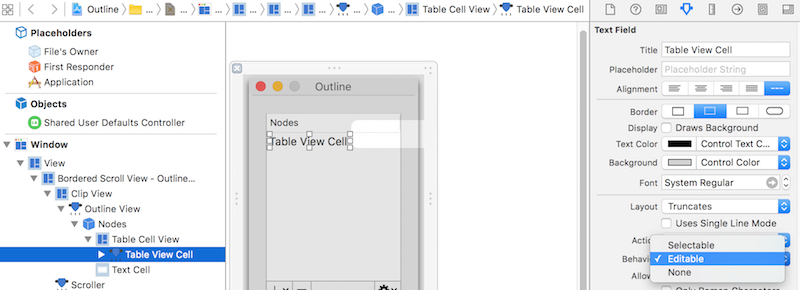

This article describes the steps to use NSOutlineView With NSOutlineViewDataSource and NSOutlineViewDelegate. The source code can be downloadedhere.
Development environment:
- OS X: 10.11.4
- XCode: 7.3
- Swift: 2.2
#Steps
##Create Basic Project
Refer to commit till #fa626ee.
##Add Model Class of “Node”
Refer to commit till #e302b91.1
2
3
4
5
6
7
8
9
10
11
12
13
14
15
16
17
18class Node: NSObject {
var title = "Node"
var isGroup = false
var children = [Node]()
weak var parent: Node?
override init() {
super.init()
}
init(title: String) {
self.title = title
}
func isLeaf() -> Bool {
return children.isEmpty
}
}
##Add UI Controls
Refer to commit till #5dee8d1.
After done, the UI looks like:

##Implement NSOutlineViewDataSource
Refer to commit till #c467d0b.
Notes:
Set NSOutlineView’s dataSource to File’s Owner.

Bind value “Table Cell View” to “Table Cell View” > Model Key Path: objectValue.title.

After done, the UI looks like:

##Implement NSOutlineViewDelegate
Refer to commit till #300948e.
Notes:
- Set NSOutlineView’s delegate to File’s Owner.

##Add Node and Group
Refer to commit till #f18c61f.
Notes:
- The logic to add node or group in correct position is very boring. That’s why binding will be a good friend.
- There’re 2 ways to insert item in outline view. One is update the data modal, then call
NSOutlineView.reloadData(). But this will let UI flash. So it’s better to manually insert item in outline view (e.g., useNSOutlineView.insertItemsAtIndexes). Another benefit is could use animation during inserting.
After done, you can add node or group. The UI looks like:

##Implement other UI Operations
The operations include remove, edit, move up and move down. It’s not hard. But the logic is complex and boring. Be careful.
Refer to commit till #3f7ffaa.
Notes
Could create a dynamic property (e.g.,
dynamic var removeButtonEnabled = false), and then bind a control’s enable property to it. e.g.,
Should set table view cell’s behavior as “Editable” to edit it.
